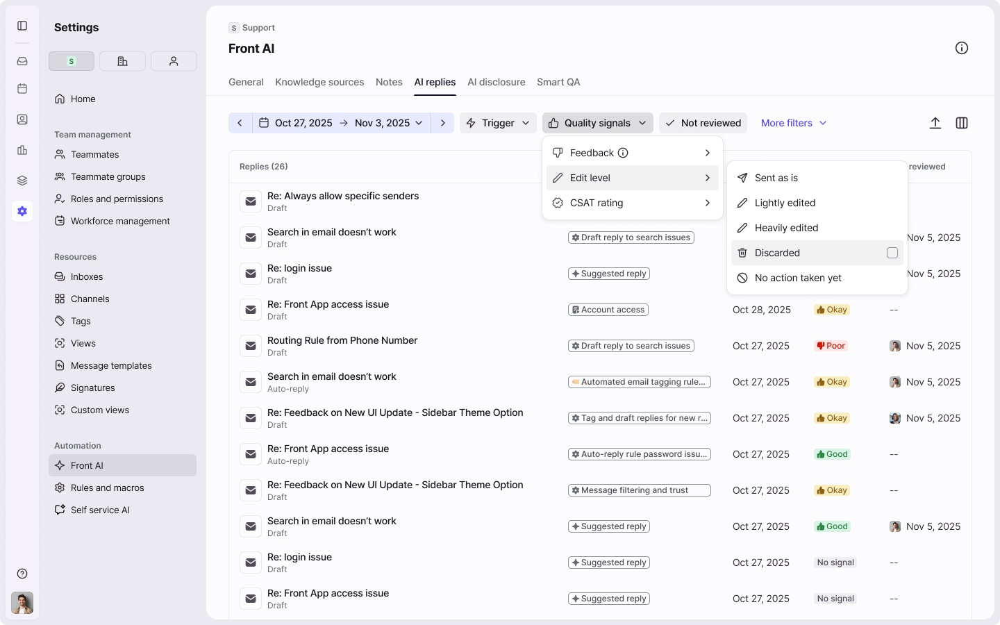
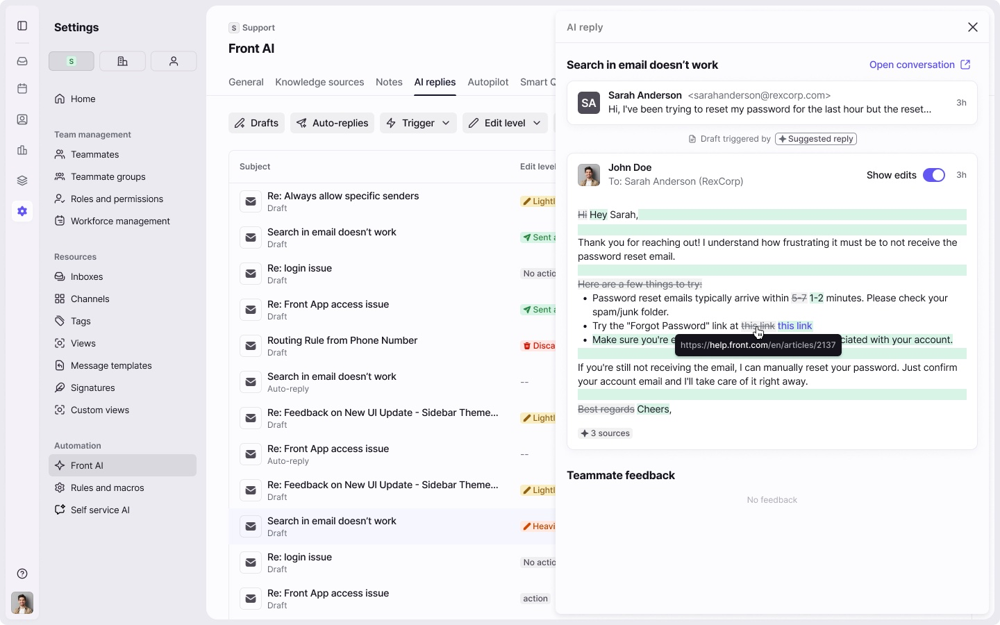
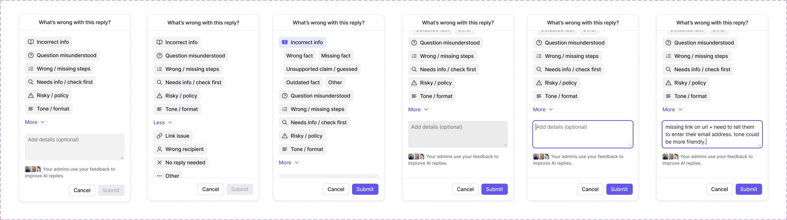
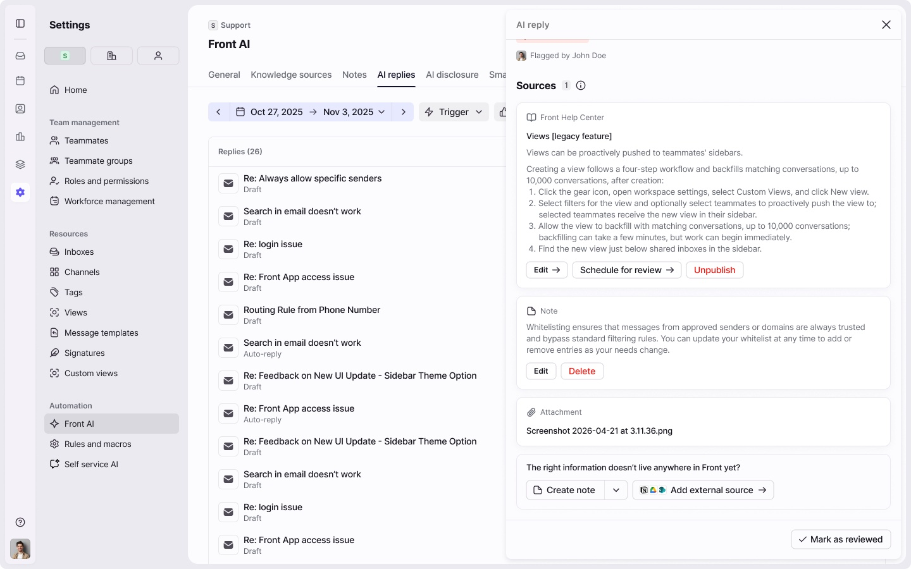
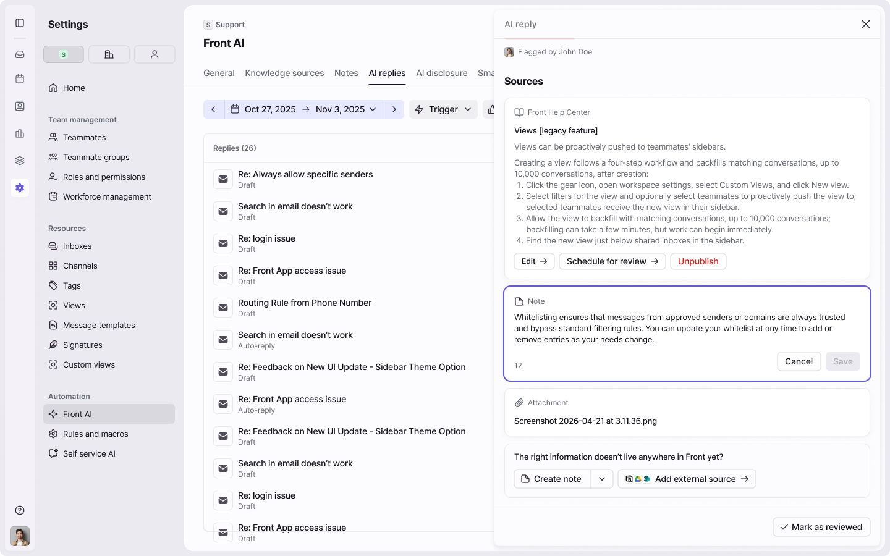
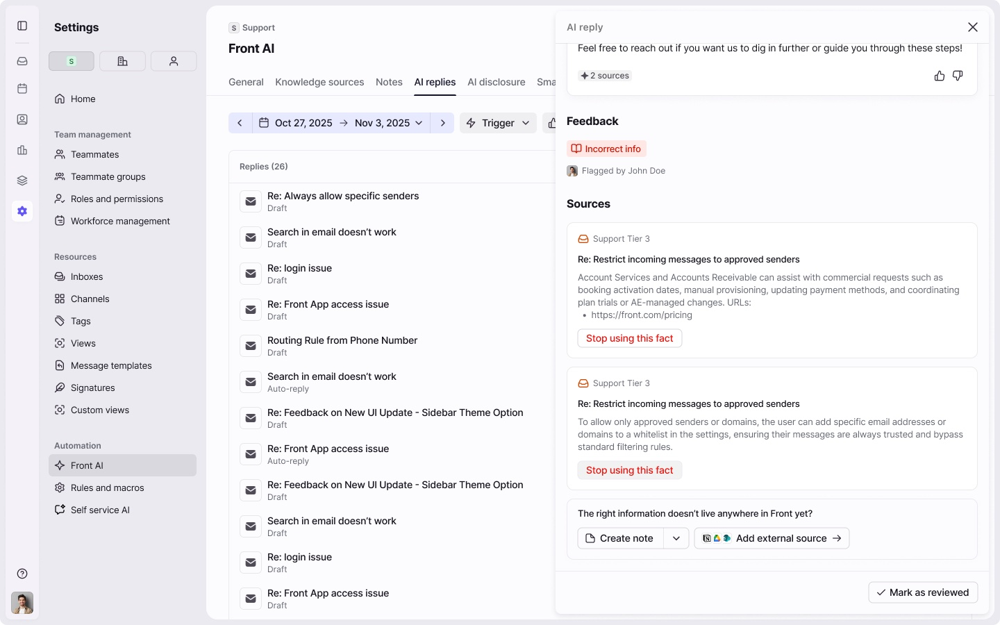
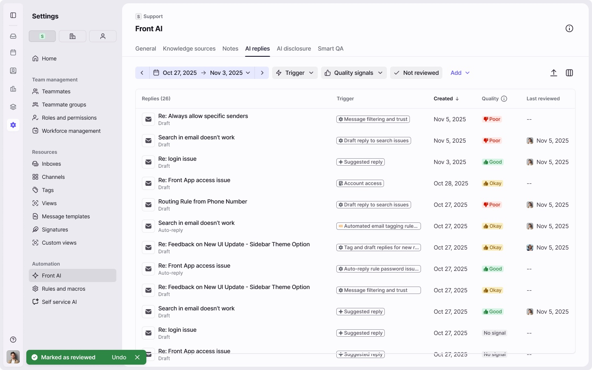

Context
AI that writes on a company's behalf
Front's AI agents answer customers in two ways. They draft a reply for a teammate to review, or they send it automatically. They write from the company's knowledge: help center articles, notes, websites and facts learned from past conversations. When that knowledge is wrong or missing, the answer is too.
Each reply leaves signals behind: what the teammate changed before sending, the feedback they left and the customer's CSAT rating. The project turned those signals into something admins could act on.
The problem
Admins couldn't trust what they couldn't see
The team's bet was that tools to find, contain and fix problems keep admins from turning AI off. Without them, the AI sometimes used an outdated source, a source that didn't say enough, or no source at all. Each case meant a wrong reply, less trust and cleanup work for agents.
One example shaped the project. Asked how to accept only approved senders, the AI told a customer to "add them to your whitelist". The answer was inaccurate, and it used a term Front avoids (the product calls it safelisting). The agent caught it, but the admin had no way to know it happened, find the source behind it or stop it from happening again.
Jobs to be done
What admins needed when a reply went wrong
We framed the work around the moment a bad reply happens. Admins needed to:
Find it
Front should surface the most critical replies, and admins need a way to look for them on their own.
Contain it
Pause the auto-reply for that use case until the problem is fixed.
Understand it
See which sources the AI used and how it reasoned.
Fix it
Add or edit a knowledge source, or stop the AI from using a fact it learned.
Test it
Preview what the AI would reply after the fix.
Key decisions
One place to see every AI reply
Auto-replies, drafts and suggestions live in one table inside each AI agent's profile. Filters follow how admins hunt for problems: time, quality signals, reply type, topic, inbox and sender. A live count updates with every filter, so admins always know how big the problem is.
Columns are customizable (quality rating, edit level, feedback, CSAT, last reviewed, teammate sender, topic and inbox), and a reply can be marked as reviewed once it's handled.
Why: admins can't fix what they can't find, and AI replies were scattered across thousands of conversations.

Use the teammate's edit as the signal
When an agent rewrites an AI draft before sending, that edit is the most honest feedback the AI gets. The panel shows the draft with the teammate's changes as a diff, with a similarity score. We grouped the nine things an agent can do with a draft into five states admins can filter by: sent as is, lightly edited, heavily edited, discarded and no action taken yet. Each has its own color, so the table reads like a heat map of trust.
Why: agents rarely fill in feedback forms, but they always edit. Reading the edit turns everyday work into data. The diff uses the same language as Front's audit log, so admins already know how to read it.

Let AI name the issue, and say it did
- Starting point
- the feedback form asked agents what was wrong, with options hidden in a dropdown. "Incorrect information" told admins nothing they could act on.
- What we tried
- a visible, multi-select list, plus an LLM that reads the teammate's edit and suggests the issue type.
- What we learned
- labels had to be specific to be useful, but forcing a sub-type pushed people into "Other".
- What shipped
- 14 issue types under a few parent groups, such as missing knowledge, ungrounded claim, wrong tone and didn't hand off, with optional sub-types. AI-suggested labels are marked "Inferred by AI", following Front's Smart CSAT pattern, so admins know who judged the reply.

Start the loop in the inbox
Most AI drafts are sent from the inbox, so that's where admins and teammates first notice a problem. A reply the AI drafted keeps a small "Drafted by AI" label after it's sent. Hovering it shows what triggered the draft, the AI's reasoning (cut at five lines so the card stays readable) and the quality rating. See reply details opens the hub with that reply already open.
Why: before this, there were three separate entry points to see how a reply was generated. One label, in the place where people already work, takes them from a single conversation to the full context in one click.
Put the source next to the answer, and fix it there
The panel lists every source the AI used, each with its own actions. A help center article can be edited, scheduled for review or unpublished. A note can be edited or deleted in place. A fact learned from past conversations can be switched off with Stop using this fact. If the right information doesn't exist yet, Create note and Add external source sit at the bottom of the panel. Mark as reviewed closes the loop, with an undo.
Why: the loop closes where it started. Admins go from "this reply is wrong" to "the source is fixed" without leaving the panel.




Exploration
After a fix, should the panel show the version the AI used or the current one? We explored five options, from showing only the latest version to a full side by side comparison. A technical constraint decided it: Front keeps the current state of notes and templates, but other sources only keep the version that was used. We shipped a simple "edited" indicator with a link to the latest version, because we couldn't build a reliable comparison for every source.
Impact
In beta, 120+ admins used the hub every week. Most knowledge fixes now happen from the detail panel, and admins turning off auto-replies after a bad answer dropped 30%.
Looking back
AI replies will always get some answers wrong, so I designed for the fix. Admins don't need the AI to be perfect. They need to see why a reply failed and correct the source in one place.